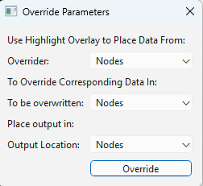

Right Clicking — All Options Available by Right Clicking in the GUI
Right Clicking in the Image Viewer Window
Right clicking in the main image viewer window presents the following options.
Find Node/Edge
Opens a text box for the ID of a node, edge, or node community. Entering the ID of a node or edge present in the image selects it, highlights it, and moves the image stack to its location, which requires calculating centroids in the current implementation. The Type to Select dropdown determines whether the search targets a node, edge, or community; communities may select multiple nodes.
Show Neighbors
A neighbor is a node one degree away from another node in a network. The following options are available:
Show Neighboring Nodes — with nodes or edges selected, adds their node-type network neighbors to the highlight display.
Show Neighboring Nodes and Edges — with nodes or edges selected, adds both their node-type and edge-type network neighbors to the highlight display.
Show Neighboring Edges — with edges selected, adds edge-type network neighbors to the highlight display.
These functions require the image data in the Nodes and Edges channels to correspond to the bottom right network table. Note that edge neighbors means the edge object joining two nodes.
Show Connected Components
A network may consist of multiple independent, unconnected components. With nodes or edges selected:
Just Nodes — adds all node-type elements in the same connected component to the highlight display.
Nodes + Edges — adds all node-type and edge-type elements in the same connected component to the highlight display.
Just Edges — adds all edge-type elements in the same connected component to the highlight display.
These functions require the image data in the Nodes and Edges channels to correspond to the bottom right network table.
Show Community
NetTracer3D can group network nodes into communities algorithmically. With nodes or edges selected:
Just Nodes — adds all node-type elements in the same community to the highlight display.
Nodes + Edges — adds all node-type and edge-type elements in the same community to the highlight display.
These functions require the image data in the Nodes and Edges channels to correspond to the bottom right network table, and the network to have been community partitioned via Analyze → Network → Community Partition.
Show Identity
NetTracer3D supports grouping nodes into separate identities, allowing them to
represent different things. Where identities have been assigned, Show
Identity lists each one; selecting an identity adds all nodes of that type to
the highlight display. This requires the image data in the Nodes channel to
correspond to the correct IDs in the node_identities property.
Selecting Custom opens a window for combining groups of identities as either positive — selecting only nodes carrying all those identities — or negative, excluding nodes carrying a given identity. This is useful for finding specific combinations on multi-identity nodes.
Select All
Nodes — adds all nodes to the highlight display.
Nodes + Edges — adds all nodes and edges to the highlight display.
Edges — adds all edges to the highlight display.
Node in Network — adds all nodes participating in the current network property to the highlight display.
Nodes + Edges in Network — adds all nodes and edges participating in the current network property to the highlight display.
Edges in Network — adds all edges participating in the current network property to the highlight display.
Select Nodes that Match Labels from Active Channel — where a subset of labeled node masks is held in a separate image such as an overlay, set that channel as active while keeping the main node masks in the nodes channel; all node labels from the sub-image are then selected in the main nodes image.
Selection
This option appears only when a selection exists.
Combine Object Labels — merges multiple selected nodes or edges into a single object and updates the network property and table.
Split non-Touching Labels — splits any selected labeled objects that are not touching in space into distinct objects.
This does not automatically update the corresponding network, since tracking which parts of the new objects belong where is difficult. Run it before computing the network.
Running it will likely disrupt network labels for nodes and require the network to be recomputed, making it better suited as a pre-calculation tool.
The current implementation may be slow on larger images when many nodes are selected.
Delete Selection — removes selected nodes or edges from both the image and the corresponding network property and table.
Link Nodes — assigns any selected nodes as new network pairs.
Split Nodes — removes the network-pair status of selected nodes that are already paired.
Override Channel with Selection — cuts the region in the current highlight display out of a chosen channel and superimposes it onto another channel.
The superimposed data is transposed so as not to overlap any currently labeled regions in the destination channel.
Only the highlighted area is superimposed; the rest remains unchanged.
This allows portions of one image or segmentation to be incorporated into another.
If the highlighted region is directed to an empty channel, an empty array is assigned there to absorb the cut-out region, which is useful for moving regions of interest into their own image.
Choosing this option opens the following menu:

The first dropdown selects the channel the highlight overlay extracts from; only the Nodes and Edges channels are offered, as they are the only ones whose data can be selected. The second selects the channel the extracted data is superimposed onto, and the third the channel where the new output is placed. Both of the latter accept any channel.

Measurements
Extracts linear or angular measurements anywhere in the dataset, both voxel-based and scaled according to the user-defined xy and z scales.
Distance — Place First Point places a measurement point at the current mouse location; Place Second Point then completes the measurement.
Angle — Place First Point (A), Place Second Point (B), and Place Third Point (C) place points at the current mouse location. All three are required to measure an angle. Point B is always the vertex, and the measured angle always prefers the acute output.
Remove All Measurements — removes all measurement points in the active session.
Measurement data is displayed in the tabulated data widget in the top right.
Add Highlight in Network Selection
With nodes or edges selected, isolates them and all their interacting neighbors into a network subgraph, placing it in the Selection table of the bottom right network widget — an area reserved for data about portions of networks.
Right Clicking in the Network Table Widget
The network table widget sits at the bottom right of the GUI. Its first two columns show linked nodes and its third shows the associated edge object, or 0 if there is none. The main network table displays the full network when the Network button is enabled, and a selection window displays isolated subgraphs when the Selection button is enabled.
Note
All table widgets support Ctrl + F searching. Enter a term in the window that appears and press Enter to find it; press Enter again to cycle through all instances in the tables.
Sort
Sorts the network table from low-to-high or high-to-low using a chosen column as reference.
Find
Find Node/Edge — navigates to the node or edge under the mouse at the time of the right click, if it exists, highlighting and selecting it in the image viewer window.
Find Pair — navigates to the corresponding pair of nodes, if they exist, highlighting and selecting them along with the associated edge object.
Save As
CSV — saves the network as a
.csvfor generic spreadsheet software.Excel — saves the network as an
.xlsxfor Microsoft Excel.Gephi — saves the network as a
.gexffile for the Gephi network analysis program.GraphML — saves the network as a
.graphmlfile, supported by a variety of network analysis programs.Pajek — saves the network as a
.netfile for the Pajek network analysis program.Pickle — saves the network into two
.pklfiles: the first contains a NetworkX graph object corresponding to the current network, the second some lists describing the same network. For large networks that are slow to load from previous sessions, placing these files in the active session folder causes them to be prioritised over the usual.csv, which loads slightly faster.
Right clicking in the selection window
The selection window offers all the same options, referencing the selected subgraph rather than the main network, plus one additional option:
Swap with network table — swaps the selection table with the main network table. This alters what NetTracer3D’s active session considers to be the main network. Any subsequent step producing a new network selection overrides the previous main network that was swapped into the selection, as the table stores only one reference at a time. Save any main network data you wish to keep before using this. It is the right tool for more in-depth analysis of a selection.
Right Clicking in the Tabbed Data Widget
The tabbed data widget stores multiple tables at once; right clicking always references the currently visible one.
Note
All table widgets support Ctrl + F searching. Enter a term in the window that appears and press Enter to find it; press Enter again to cycle through all instances in the tables.
Sort
Sorts the table from low-to-high or high-to-low using a chosen column as reference.
Save As
CSV — saves the table as a
.csvfor generic spreadsheet software.Excel — saves the table as an
.xlsxfor Microsoft Excel.
Use to Threshold Nodes
A table with the structure {col 1 - Integers : col 2 - Numbers} can be used
to threshold the contents of the nodes channel, provided the table was generated
in reference to those nodes. This allows any data used to analyse the nodes to be
sorted interactively.
Filter for Selected Nodes
Where numerical node identifiers occupy the first column and a set of nodes is selected, this creates a subtable containing only those nodes. Specific node communities or identities can therefore be isolated within tables by selecting them first with the right click options in the main window, then filtering.
Close All
Closes all active tables, which is useful when many have accumulated.
Next Steps
This concludes the right click functions. Next, proceed to All File Menu Options for information on the file menu functions.